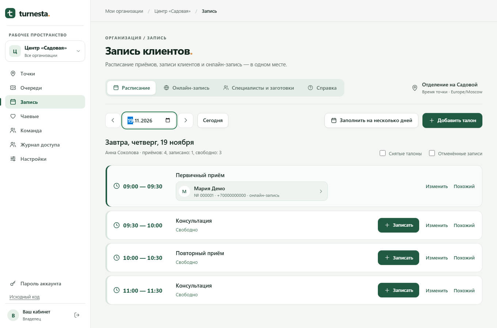
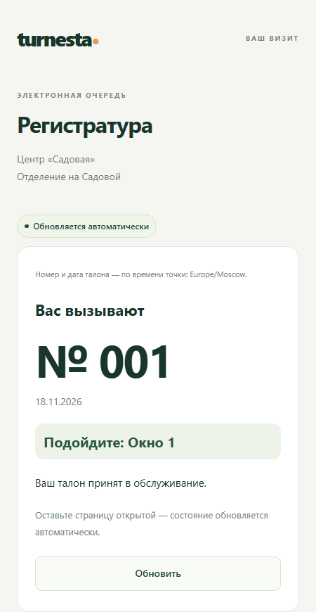
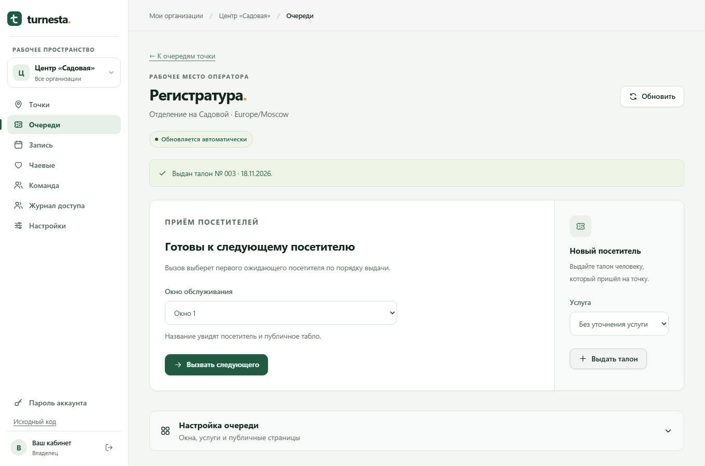

На своём сервере · Открытый код
Запись и живая очередь в одном кабинете.
Принимайте записи с сайта и выдавайте талоны по QR-коду тем, кто пришёл без записи. Сотрудники ведут расписание и вызывают посетителей к окну. Приложение работает на вашем сервере.


Два визита по шагам
На семи скриншотах из v0.1.0 — запись на приём и визит без записи. Выберите шаг, чтобы увидеть экран клиента или сотрудника. Данные демонстрационные.
Записаться на приём


Занять очередь





Запустить Turnesta у себя
Понадобятся Git и Docker Compose. В Windows используйте Git Bash и Linux-контейнеры. Установщик соберёт приложение, создаст первую организацию и выведет данные для входа.
git clone --branch v0.1.0 https://github.com/TimeOfAnarchy/turnesta.git
cd turnesta
./scripts/install.shЧто доступно в v0.1.0
Это предварительный релиз для знакомства с системой. Перенос и отмену записи оформляет сотрудник. Временного удержания места и напоминаний пока нет. В разделе чаевых действует имитация оплаты. Оба показанных сценария проверены локально. Реальный VPS, внешний SMTP и сайт действующей организации ещё требуют проверки. Описание версии ↗